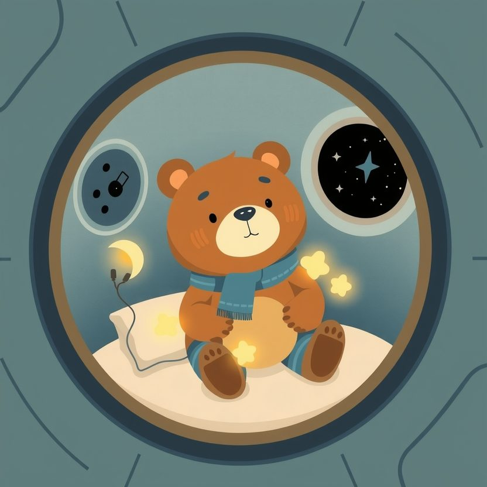

Titistoire › Les Étoiles (3-6 ans)
Nestor et le mangeur de lumières
Une histoire de Nestor l'ourson pour parler de : la peur du noir.

▶ Écouter et regarder l'histoire
Gratuit, sans inscription : la voix lit, le texte suit mot à mot, les images tournent comme dans un album.
Le texte de l'histoire
Nestor est astronaute. C'est un métier magnifique, avec un seul petit ennui : dans l'espace, il fait nuit tout le temps.
Or Nestor n'aime pas le noir. Dans le noir, on ne sait jamais ce qui se cache dans les recoins. Il pourrait y avoir n'importe quoi. Ou pire : n'importe qui.
Alors, dans sa fusée, il a suspendu sept veilleuses. Une rouge, une bleue, une en forme de lune… Chaque soir, avant de dormir, il les compte du bout de la patte, et le voilà rassuré.
Un soir, il compte : « Une, deux, trois, quatre, cinq, six… » Il recompte. Six. Un crochet est vide : la veilleuse rouge s'est volatilisée.
Le lendemain : cinq. Le surlendemain : quatre. « Anomalie, grésille Bip le robot. Quelqu'un mange nos lumières. »
Et dehors, par le hublot, c'est plus étrange encore. Là-bas, une étoile s'éteint. Pouf. Puis une autre. Pouf. Le noir grignote le ciel.
Bientôt, il ne reste plus qu'une veilleuse : la petite lune. Nestor se blottit sous sa couverture et la serre contre son cœur. Impossible de fermer l'œil.
Au milieu de la nuit… scritch, scritch. Quelque chose avance dans la fusée, sur la pointe des pieds. Quelque chose de rond. Avec un seul œil, qui brille.
Nestor voudrait crier, mais sa voix est partie se cacher. La chose se penche sur la veilleuse… ouvre une bouche immense… et… GLOUP !
Noir. Tout noir. Le pire qui pouvait arriver est arrivé. Nestor attend d'avoir très, très peur. Mais voilà qu'un drôle de petit bruit monte dans la cabine. On dirait… un sanglot ?
Dans le noir, quelque chose luit doucement. C'est le ventre de la chose : rond, violet, tout plein de lumières avalées, comme une lanterne en peluche.
« Me fais pas de mal, renifle la chose. Je m'appelle Gloup. C'est pas ma faute. J'ai trop peur du noir. Alors je mange les lumières, pour en avoir toujours une sur moi. »
Nestor n'en revient pas. Un monstre… qui a peur du noir ? « Hmm… Moi aussi, avoue-t-il. J'avais sept veilleuses. » « Je sais, répond Gloup, tout penaud. Elles étaient délicieuses. Pardon. »
De sa poche, Nestor tire un biscuit, qu'il casse en deux. Cric, crac. Ils croquent en silence, côte à côte, à la lueur du ventre de Gloup.
« Mais dis donc, Gloup… Si tu avales toutes les étoiles, il fera encore plus noir. Pour tout le monde. Et pour toi aussi. » Gloup s'arrête de mâcher. Il n'y avait jamais songé.
Ils se tournent vers le hublot. Dehors, le ciel est presque vide. « J'ai une idée, annonce Nestor. Elle me fait un peu peur. On va regarder le noir. Ensemble. Juste un petit moment. »
Il prend la patte de Gloup. Elle est douce, et elle tremblote. La sienne aussi. Puis il pose la couverture sur le ventre lumineux, comme on souffle une bougie.
D'abord, on n'y voit rien du tout. Puis, peu à peu, les yeux s'habituent. Et là… le noir n'est pas vide. Il est bleu, d'un bleu très profond, et doux comme du velours.
« Tu sais, chuchote Nestor, les étoiles, on ne les voit que quand il fait noir. Le jour, elles sont là aussi, mais personne ne les regarde. »
Gloup réfléchit très fort. Puis il se gonfle comme un ballon, ouvre le hublot, et souffle. Pfffou ! Une étoile jaillit de sa bouche. Puis dix. Puis mille !
Le ciel se rallume, plus scintillant qu'avant. Et dans la fusée : une veilleuse rouge, une bleue, une petite lune… Bip les compte une à une. « Sept. Le compte est bon. »
Ce soir-là, Nestor n'allume qu'une seule veilleuse. La petite lune. Les six autres, il les offre à Gloup, pour éclairer sa grotte, sur l'astéroïde d'à côté.
« Et si j'ai peur quand même ? » s'inquiète Gloup, les bras chargés de veilleuses. « Alors tu regardes par ta fenêtre. Je laisserai ma lune allumée. Tu sauras que je suis là. »
Depuis, quand on passe dans ce coin de l'espace, on aperçoit deux petites lumières qui se font signe dans la nuit. Et tout autour, des étoiles, des étoiles, des étoiles.